28 Day 28
library(tidyverse)
library(fields)
library(mvnfast)
library(patchwork)
library(rstan)
## use recommended rstan settings
options(mc.cores = parallel::detectCores())
rstan_options(auto_write = TRUE)
library(bayesplot)28.1 Announcements
28.2 Intro to stan
- Needs a c++ compiler toolchain. See here for instructions on how to install the
rstanlibrary- instructions for your OS (Windows, MacOC, Linux, and support for different languages, etc. on the bar to the right)
probabilistic programming
allows you to focus on modelling rather than algorithms for fitting
Many alternatives (NIMBLE, JAGS, PyMC3, PyMC4 - experimental)
28.2.1 Example: Linear regression
set.seed(444)
n <- 1000
X <- cbind(1, runif(n))
beta <- c(3, 2)
sigma <- 0.25
y <- as.vector(X %*% beta + rnorm(n, 0, sigma))
data.frame(y = y, x = X[, 2], mu = X %*% beta) %>%
ggplot(aes(x = x, y = y)) +
geom_point() +
geom_line(aes(x = x, y = mu), color = "red")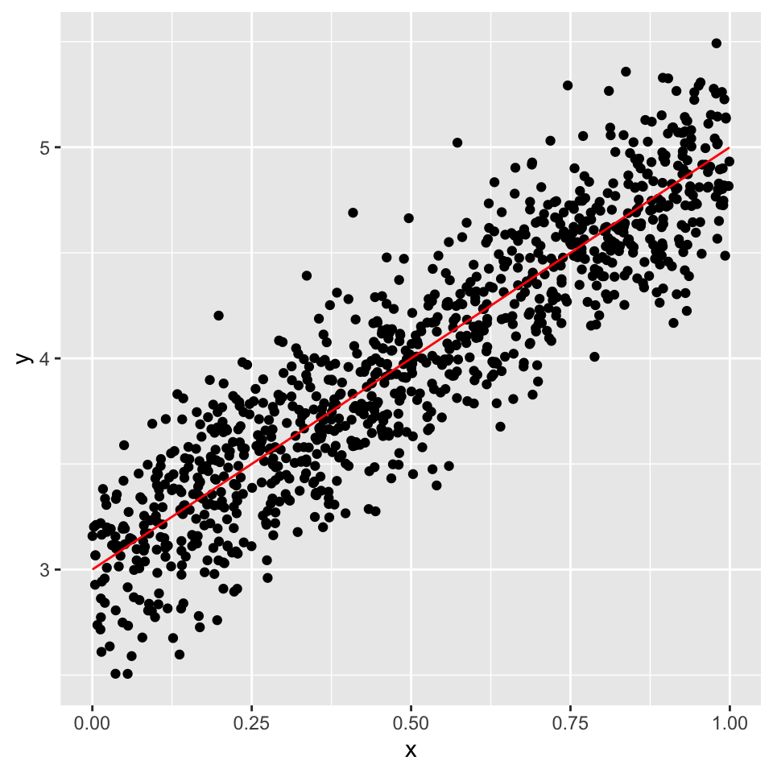
we need to define a stan model
create a stan model in a folder named
stan_modelsin the Rstudio project folderprint the output of the model
linear-regression.stan
//
// This Stan program defines a simple model, with a
// vector of values 'y' modeled as normally distributed
// with mean 'mu' = 'X beta` and standard deviation 'sigma'.
//
// Learn more about model development with Stan at:
//
// http://mc-stan.org/users/interfaces/rstan.html
// https://github.com/stan-dev/rstan/wiki/RStan-Getting-Started
//
// The input data is a vector 'y' of length 'n' and an
// 'n' times 'p' matrix of covariates (including the intercept)
data {
int<lower=0> n;
int<lower=0> p;
vector[n] y;
matrix[n, p] X;
}
// The parameters accepted by the model. Our model
// accepts two parameters 'beta' and 'sigma'.
parameters {
vector[p] beta;
real<lower=0> sigma;
vector[n] y_rep;
}
// The transformed parameters X %*% beta for the model.
transformed parameters {
vector[n] mu;
mu = X * beta;
}
// The model to be estimated. We model the output
// 'y' to be normally distributed with mean 'mu'
// and standard deviation 'sigma'.
model {
y ~ normal(mu, sigma);
// Note that this is vectorized and equivalent to
// for (i in 1:n) {
// y[i] ~ normal(mu[i], sigma);
// }
// posterior predictive distribution
y_rep ~ normal(mu, sigma);
}
// Note: the stan file must end in a blank (new) lineWhat are the priors implied by this model on \(\boldsymbol{\beta}\) and \(\sigma\)?
Fitting the model
fit <- stan(
file = here::here("stan_models", "linear-regression.stan"),
data = list(y = y, n = n, X = X, p = ncol(X)),
iter = 1000
)- with priors
//
// This Stan program defines a simple model, with a
// vector of values 'y' modeled as normally distributed
// with mean 'mu' = 'X beta` and standard deviation 'sigma'.
//
// Learn more about model development with Stan at:
//
// http://mc-stan.org/users/interfaces/rstan.html
// https://github.com/stan-dev/rstan/wiki/RStan-Getting-Started
//
// The input data is a vector 'y' of length 'n' and an
// 'n' times 'p' matrix of covariates (including the intercept)
data {
int<lower=0> n;
int<lower=0> p;
vector[n] y;
matrix[n, p] X;
}
// The parameters accepted by the model. Our model
// accepts two parameters 'beta' and 'sigma'.
parameters {
vector[p] beta;
real<lower=0> sigma;
vector[n] y_rep;
}
// The transformed parameters X %*% beta for the model.
transformed parameters {
vector[n] mu;
mu = X * beta;
}
// The model to be estimated. We model the output
// 'y' to be normally distributed with mean 'mu'
// and standard deviation 'sigma'.
model {
y ~ normal(mu, sigma);
beta ~ normal(0, 5);
sigma ~ cauchy(0, 5);
// Note that this is vectorized and equivalent to
// for (i in 1:n) {
// y[i] ~ normal(mu[i], sigma);
// }
// posterior predictive distribution
y_rep ~ normal(mu, sigma);
}
// Note: the stan file must end in a blank (new) linefit_prior <- stan(
file = here::here("stan_models", "linear-regression-priors.stan"),
data = list(y = y, n = n, X = X, p = ncol(X)),
iter = 1000
)- examine the output from the MCMC fit
## only plot the regression parameters
print(fit, probs = c(0.1, 0.9), pars = c("beta", "sigma", "lp__"))
## trace plots
mcmc_trace(fit, regex_pars = c("beta", "sigma", "lp__"))
## area plots of posterior
mcmc_areas(fit, regex_pars = c("beta", "sigma"))## Warning: `expand_scale()` is deprecated; use `expansion()`
## instead.## acf plots
mcmc_acf(fit, regex_pars = c("beta", "sigma"))
## violin plots of posterior
mcmc_violin(fit, regex_pars = c("beta", "sigma"))## Inference for Stan model: linear-regression.
## 4 chains, each with iter=1000; warmup=500; thin=1;
## post-warmup draws per chain=500, total post-warmup draws=2000.
##
## mean se_mean sd 10% 90% n_eff Rhat
## beta[1] 3.00 0.00 0.02 2.98 3.02 1141 1.00
## beta[2] 1.98 0.00 0.03 1.94 2.02 1165 1.00
## sigma 0.26 0.00 0.01 0.25 0.26 901 1.00
## lp__ 1717.79 1.44 30.48 1679.23 1756.59 447 1.01
##
## Samples were drawn using NUTS(diag_e) at Tue Apr 7 20:44:57 2020.
## For each parameter, n_eff is a crude measure of effective sample size,
## and Rhat is the potential scale reduction factor on split chains (at
## convergence, Rhat=1).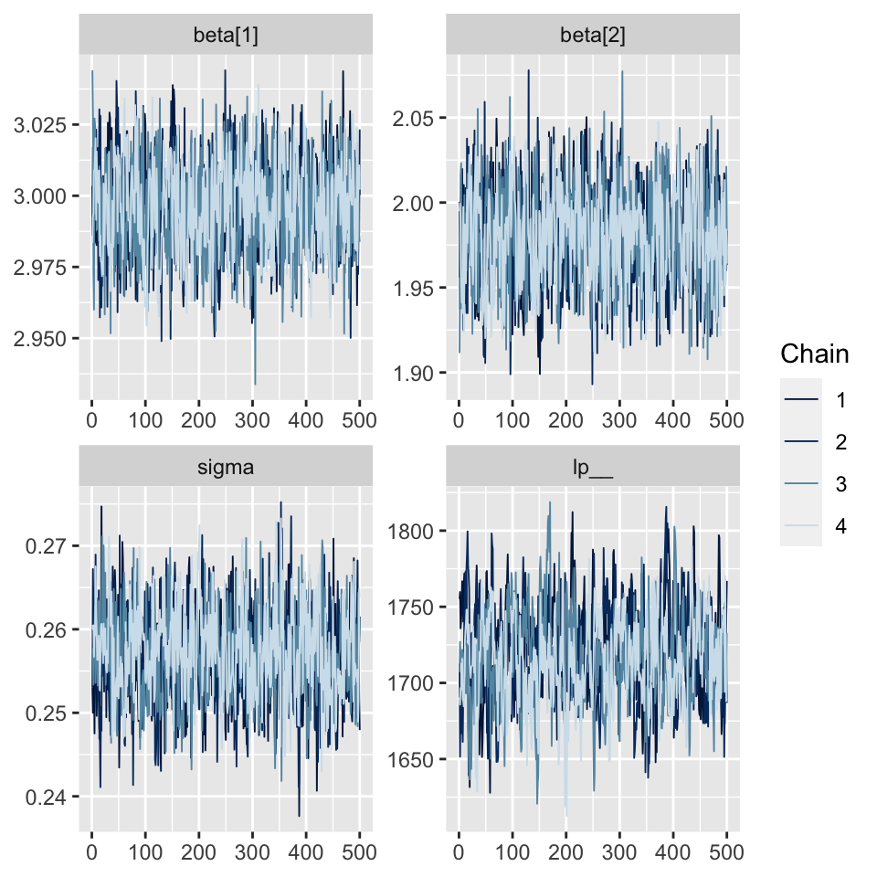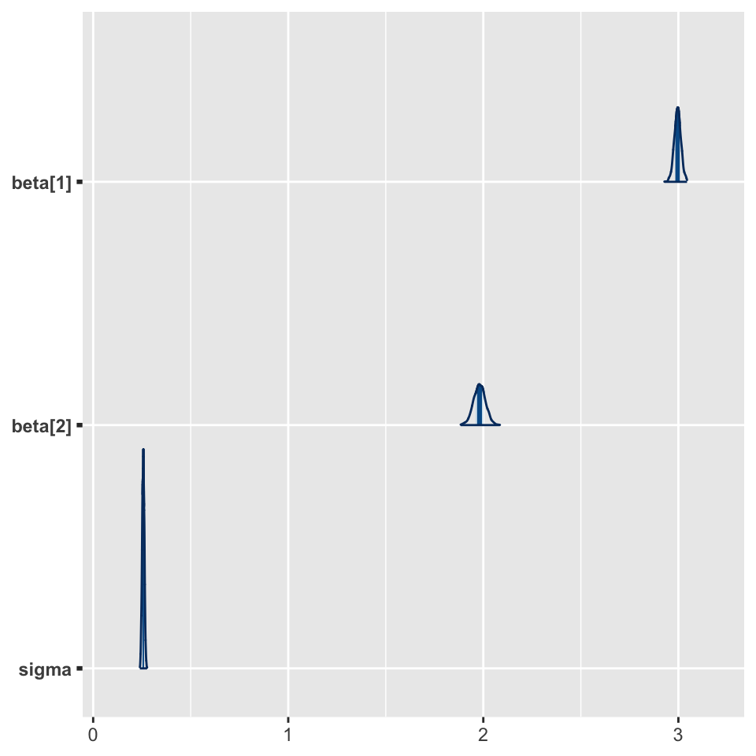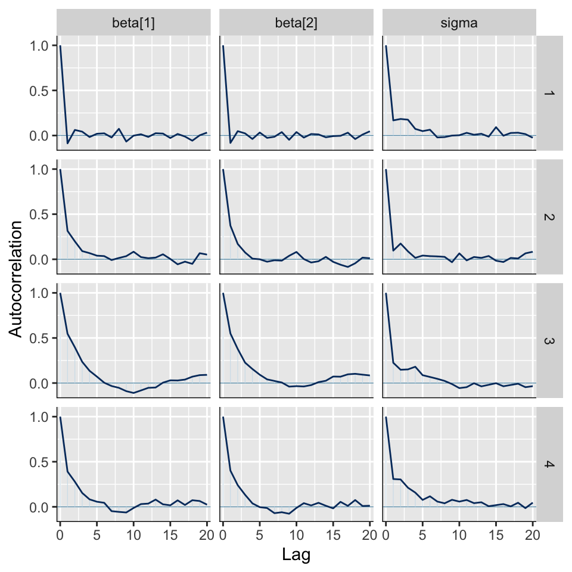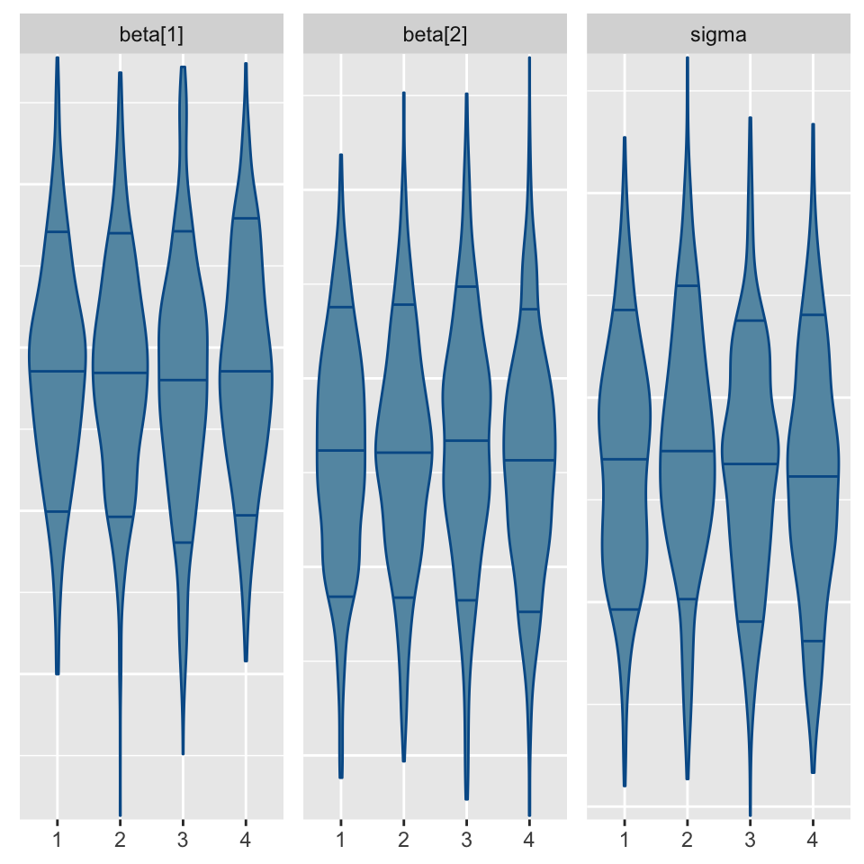
- compare these estimates to the
lmestimtes
##
## Call:
## lm(formula = y ~ X - 1)
##
## Residuals:
## Min 1Q Median 3Q Max
## -0.6696 -0.1733 0.0016 0.1705 0.8912
##
## Coefficients:
## Estimate Std. Error t value Pr(>|t|)
## X1 2.9962 0.0165 181.4 <2e-16 ***
## X2 1.9802 0.0285 69.4 <2e-16 ***
## ---
## Signif. codes:
## 0 '***' 0.001 '**' 0.01 '*' 0.05 '.' 0.1 ' ' 1
##
## Residual standard error: 0.256 on 998 degrees of freedom
## Multiple R-squared: 0.996, Adjusted R-squared: 0.996
## F-statistic: 1.24e+05 on 2 and 998 DF, p-value: <2e-1628.2.1.1 Posterior predictive checks
How do we know if the model is fitting the data well?
\[\begin{align*} [\tilde{\mathbf{y}} | \mathbf{y}] & = \int [\tilde{\mathbf{y}} | \boldsymbol{\theta} ] [\boldsymbol{\theta} | \mathbf{y}] \,d\boldsymbol{\theta} \end{align*}\]
where the integral over \(\boldsymbol{\theta}\) is performed using MCMC sampling.
- Using the
bayesplotpackage, we can explre the posterior predictive checks (ppcs) using a variety of functions
## extract the posterior predictive samples
y_rep <- rstan::extract(fit, pars = "y_rep")$y_rep
## only plot for 25 randomly selected samples
plot_idx <- sample(1:n, 25)
ppc_data(y, y_rep)## # A tibble: 2,001,000 x 6
## y_id rep_id rep_label is_y is_y_label value
## <int> <int> <fct> <lgl> <fct> <dbl>
## 1 1 1 italic(y)[rep] ( … FALSE italic(y)[re… 3.31
## 2 1 2 italic(y)[rep] ( … FALSE italic(y)[re… 3.25
## 3 1 3 italic(y)[rep] ( … FALSE italic(y)[re… 3.36
## 4 1 4 italic(y)[rep] ( … FALSE italic(y)[re… 3.17
## 5 1 5 italic(y)[rep] ( … FALSE italic(y)[re… 3.72
## 6 1 6 italic(y)[rep] ( … FALSE italic(y)[re… 2.80
## 7 1 7 italic(y)[rep] ( … FALSE italic(y)[re… 3.22
## 8 1 8 italic(y)[rep] ( … FALSE italic(y)[re… 2.95
## 9 1 9 italic(y)[rep] ( … FALSE italic(y)[re… 3.43
## 10 1 10 italic(y)[rep] ( … FALSE italic(y)[re… 3.32
## # … with 2,000,990 more rows## `stat_bin()` using `bins = 30`. Pick better value with
## `binwidth`.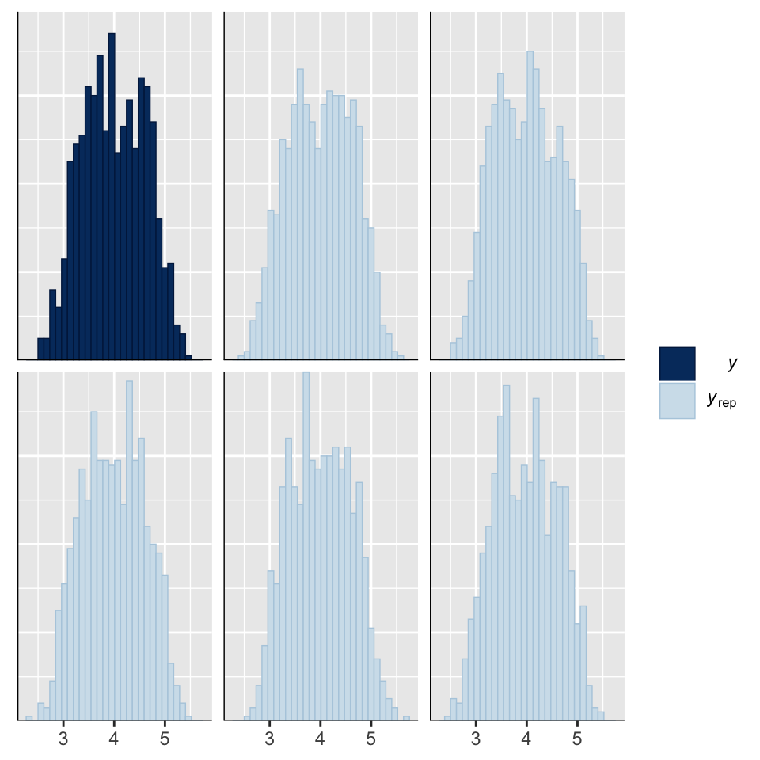


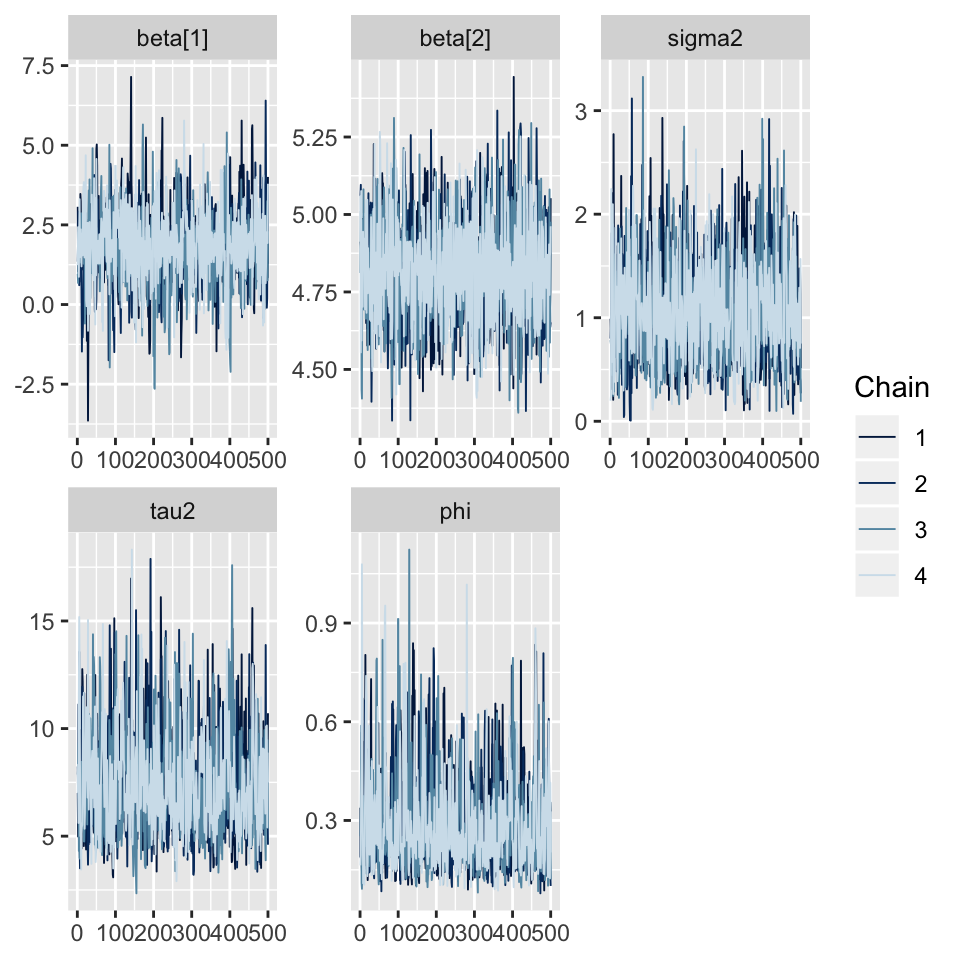
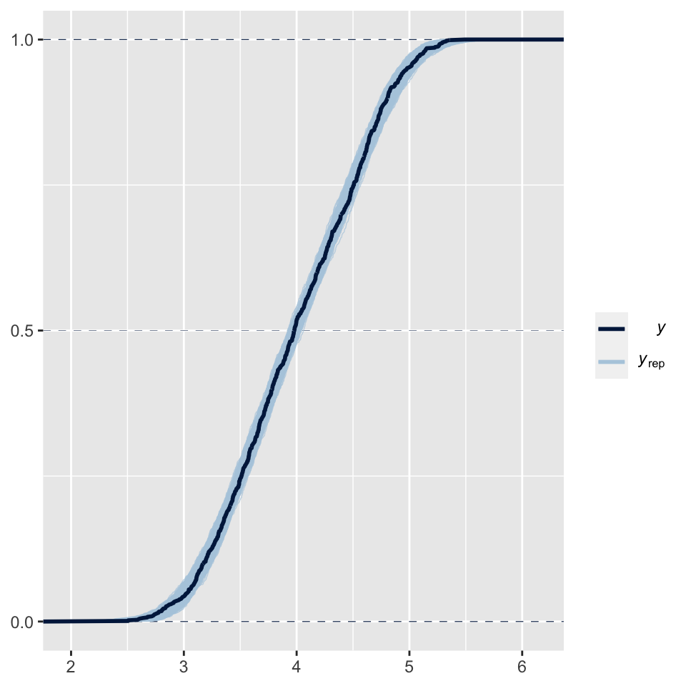
28.2.1.2 Optimization in stan
- We can also fit the model using optimization:
- max posterior mode, also known as max a posteriori (MAP).
- max penalized likelihood (MLE).
model <- stan_model(
file = here::here("stan_models", "linear-regression.stan")
)
mle <- optimizing(model, data = list(y = y, n = n, X = X, p = ncol(X)))
print(mle$par[1:3], digits = 4)## beta[1] beta[2] sigma
## 2.9964 1.9799 0.181128.2.2 Example: Spatial model in stan
//
// This Stan program defines a simple model, with a
// vector of values 'y' modeled as normally distributed
// with mean 'mu' = 'X beta` and standard deviation 'sigma'.
//
// Learn more about model development with Stan at:
//
// http://mc-stan.org/users/interfaces/rstan.html
// https://github.com/stan-dev/rstan/wiki/RStan-Getting-Started
//
// The input data is a vector 'y' of length 'n', an
// 'n' times 'p' matrix of covariates (including the intercept),
// and 'coords' is an 'n' times '2' matrix of spatial locations
data {
int<lower=0> n;
int<lower=0> p;
vector[n] y;
matrix[n, p] X;
matrix[n, 2] coords;
}
// calculate the Euclidean distance between observed locations
transformed data {
matrix[n, n] D;
for (i in 1:n) {
for (j in 1:(i-1)) {
D[i, j] = sqrt(sum(square(coords[i, ] - coords[j, ])));
D[j, i] = D[i, j];
}
D[i, i] = 0.0;
}
}
// The parameters accepted by the model. Our model
// accepts the parameters 'beta', 'sigma2', 'tau2' and 'phi'.
parameters {
vector[p] beta;
real<lower=0> sigma2;
real<lower=0> tau2;
real<lower=0> phi;
}
// The transformed parameters X %*% beta for the model,
// Sigma for the covariance matrix, and L_Sigma for the
// Cholesky decomposition of the covariance matrix
transformed parameters {
vector[n] mu;
cov_matrix[n] Sigma;
matrix[n, n] L_Sigma;
mu = X * beta;
for (i in 1:(n-1)) {
for (j in (i+1):n) {
Sigma[i, j] = tau2 * exp(- D[i, j] / phi);
Sigma[j, i] = Sigma[i, j];
}
}
// equivalent to
// Sigma = exp( - D / phi)
for (i in 1:n) {
Sigma[i, i] = sigma2 + tau2;
}
L_Sigma = cholesky_decompose(Sigma);
}
// The model to be estimated. We model the output
// 'y' to be normally distributed with mean 'mu'
// and Cholesky of covariance matrix L_Sigma.
model {
// priors
phi ~ normal(0, 10);
tau2 ~ normal(0, 5);
sigma2 ~ normal(0, 5);
beta ~ normal(0, 5);
// likelihood
y ~ multi_normal_cholesky(mu, L_Sigma);
}
// Note: the stan file must end in a blank (new) line## Make some data
set.seed(1)
n <- 100
coords <- cbind(runif(n, 0, 1), runif(n, 0, 1))
X <- cbind(1, rnorm(n))
beta <- as.matrix(c(1, 5))
sigma2 <- 1
tau2 <- 5
phi <- 3 / 0.5
D <- as.matrix(rdist(coords))
R <- exp(- phi * D)
eta <- c(rmvn(1, rep(0,n), tau2 * R))
y <- rnorm(n, X %*% beta + eta, sqrt(sigma2))- Fit the stan model
- this can be a little slow for fitting relatively small data
- however, stan uses Hamiltonian Monte Carlo (HMC) which is highly efficient
- often can get by with much shorter MCMC chains (500-1000 samples – monitor the effective sample size)
fit <- stan(
file = here::here("stan_models", "spatial-regression.stan"),
data = list(y = y, n = n, X = X, p = ncol(X), coords = coords),
iter = 1000
) ## Warning: The largest R-hat is NA, indicating chains have not mixed.
## Running the chains for more iterations may help. See
## http://mc-stan.org/misc/warnings.html#r-hat## Warning: Bulk Effective Samples Size (ESS) is too low, indicating posterior means and medians may be unreliable.
## Running the chains for more iterations may help. See
## http://mc-stan.org/misc/warnings.html#bulk-ess## Warning: Tail Effective Samples Size (ESS) is too low, indicating posterior variances and tail quantiles may be unreliable.
## Running the chains for more iterations may help. See
## http://mc-stan.org/misc/warnings.html#tail-ess- examine the output from the MCMC fit
## only plot the regression parameters
print(fit, probs = c(0.1, 0.9), pars = c("beta", "sigma2", "tau2", "phi"))
## trace plots
mcmc_trace(fit, regex_pars = c("beta", "sigma2", "tau2", "phi"))
## area plots of posterior
mcmc_areas(fit, regex_pars = c("beta", "sigma2", "tau2", "phi"))## Warning: `expand_scale()` is deprecated; use `expansion()`
## instead.## Inference for Stan model: spatial-regression.
## 4 chains, each with iter=1000; warmup=500; thin=1;
## post-warmup draws per chain=500, total post-warmup draws=2000.
##
## mean se_mean sd 10% 90% n_eff Rhat
## beta[1] 1.83 0.03 1.20 0.42 3.33 1228 1
## beta[2] 4.82 0.00 0.17 4.60 5.02 1619 1
## sigma2 1.06 0.01 0.48 0.48 1.68 1186 1
## tau2 7.63 0.07 2.40 4.95 11.03 1084 1
## phi 0.30 0.01 0.15 0.15 0.49 832 1
##
## Samples were drawn using NUTS(diag_e) at Tue Apr 7 20:48:05 2020.
## For each parameter, n_eff is a crude measure of effective sample size,
## and Rhat is the potential scale reduction factor on split chains (at
## convergence, Rhat=1). 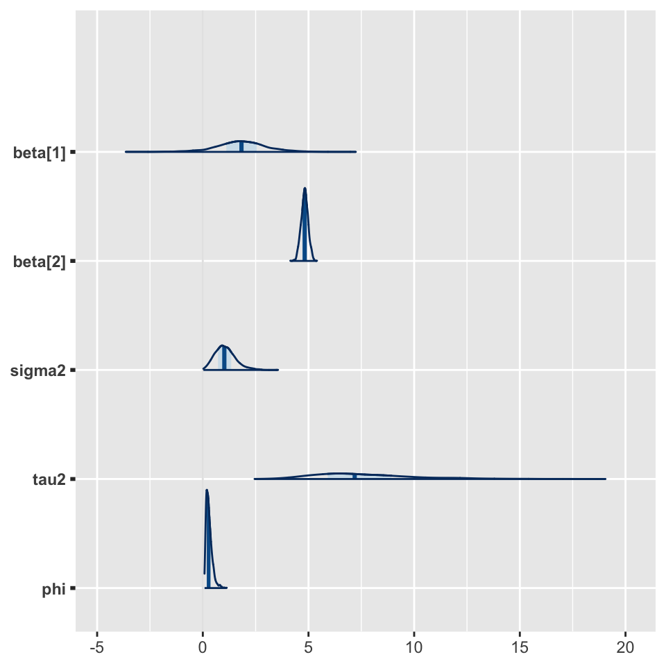
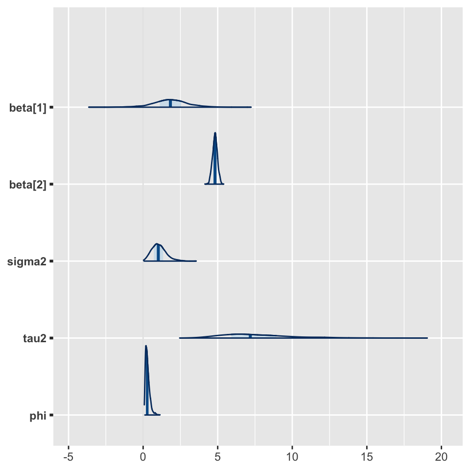
28.2.3 Example: Predictive process model in stan
- use the same data from the previous example
//
// This Stan program defines a simple model, with a
// vector of values 'y' modeled as normally distributed
// with mean 'mu' = 'X beta` and standard deviation 'sigma'.
//
// Learn more about model development with Stan at:
//
// http://mc-stan.org/users/interfaces/rstan.html
// https://github.com/stan-dev/rstan/wiki/RStan-Getting-Started
//
// The input data is a vector 'y' of length 'n', an
// 'n' times 'p' matrix of covariates (including the intercept),
// an 'n' times '2' matrix 'coords' of spatial locations, and
// an 'n_knots' times '2' matrix of 'knots' for the predictive process
data {
int<lower=0> n;
int<lower=0> p;
int<lower=0> n_knots;
vector[n] y;
matrix[n, p] X;
matrix[n, 2] coords;
matrix[n_knots, 2] knots;
}
transformed data {
matrix[n, n_knots] D;
matrix[n_knots, n_knots] D_star;
for (i in 1:n) {
for (j in 1:n_knots) {
D[i, j] = sqrt(sum(square(coords[i, ] - knots[j, ])));
}
}
for (i in 1:n_knots) {
for (j in 1:(i-1)) {
D_star[i, j] = sqrt(sum(square(knots[i, ] - knots[j, ])));
D_star[j, i] = D_star[i, j];
}
D_star[i, i] = 0.0;
}
}
// The parameters accepted by the model. Our model
// accepts two parameters 'beta' and 'sigma'.
parameters {
vector[p] beta;
real<lower=0> sigma2;
real<lower=0> tau2;
real<lower=0> phi;
vector[n_knots] eta_centered;
}
// The transformed parameters X %*% beta for the model,
// Sigma for the covariance matrix, and L_Sigma for the
// Cholesky decomposition of the covariance matrix
transformed parameters {
vector[n] mu;
vector[n_knots] eta_star;
vector[n] eta;
cov_matrix[n_knots] Sigma_star;
cov_matrix[n_knots] Sigma_star_inv;
matrix[n, n_knots] c;
// fixed effects
mu = X * beta;
// latent GP covariance matrix at the knots
Sigma_star = tau2 * exp(-D_star / phi);
Sigma_star_inv = inverse(Sigma_star);
// predictive process interpolation matrix
c = tau2 * exp(- D / phi);
// eta_centered is N(0, 1)
// eta_star = L * eta_centered ~ N(0, LL')
eta_star = cholesky_decompose(Sigma_star) * eta_centered;
// predictive process interpolator
eta = c * Sigma_star_inv * eta_star;
}
model {
// priors
phi ~ normal(0, 10);
tau2 ~ normal(0, 5);
sigma2 ~ normal(0, 5);
beta ~ normal(0, 5);
eta_centered ~ normal(0, 1);
y ~ normal(mu + eta, sqrt(sigma2));
// Note that this is vectorized and equivalent to
// for (i in 1:n) {
// y[i] ~ normal(mu[i] + eta[i], sqrt(sigma2));
// }
}
// Note: the stan file must end in a blank (new) line- Fit the stan model
- this can be a little slow for fitting relatively small data
- however, stan uses Hamiltonian Monte Carlo (HMC) which is highly efficient
- often can get by with much shorter MCMC chains (500-1000 samples – monitor the effective sample size)
n_knots <- 5^2
knots <- expand.grid(
seq(min(coords[, 1]), max(coords[, 1]), length.out = sqrt(n_knots)),
seq(min(coords[, 2]), max(coords[, 2]), length.out = sqrt(n_knots))
)fit <- stan(
file = here::here("stan_models", "predictive-process-regression.stan"),
data = list(y = y, n = n, X = X, p = ncol(X),
coords = coords, n_knots = n_knots, knots = knots),
iter = 1000
)- examine the output from the MCMC fit
## only plot the regression parameters
print(fit, probs = c(0.1, 0.9), pars = c("beta", "sigma2", "tau2", "phi"))
## trace plots
mcmc_trace(fit, regex_pars = c("beta", "sigma2", "tau2", "phi"))
## area plots of posterior
mcmc_areas(fit, regex_pars = c("beta", "sigma2", "tau2", "phi"))## Warning: `expand_scale()` is deprecated; use `expansion()`
## instead.## Inference for Stan model: predictive-process-regression.
## 4 chains, each with iter=1000; warmup=500; thin=1;
## post-warmup draws per chain=500, total post-warmup draws=2000.
##
## mean se_mean sd 10% 90% n_eff Rhat
## beta[1] 1.75 0.04 1.48 0.00 3.58 1379 1
## beta[2] 4.80 0.00 0.20 4.55 5.06 2896 1
## sigma2 3.54 0.02 0.60 2.83 4.33 1308 1
## tau2 9.27 0.08 2.95 5.72 13.24 1355 1
## phi 0.43 0.01 0.32 0.19 0.74 1001 1
##
## Samples were drawn using NUTS(diag_e) at Tue Apr 7 20:51:27 2020.
## For each parameter, n_eff is a crude measure of effective sample size,
## and Rhat is the potential scale reduction factor on split chains (at
## convergence, Rhat=1). 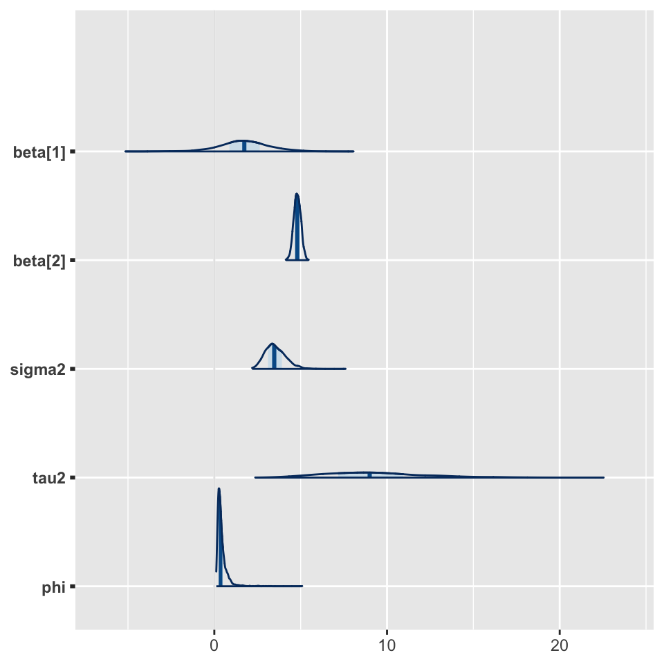
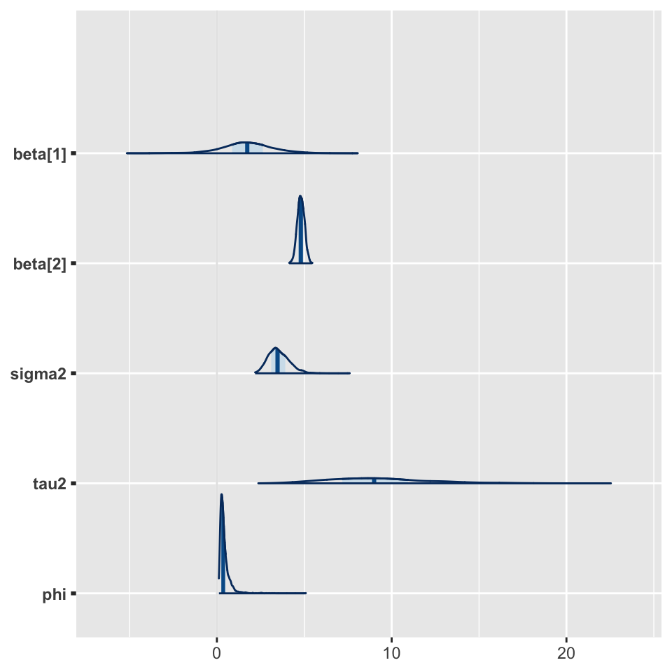
28.3 stan Hints and tips
- if there are issues, run one chain using
chains = 1option in thestan()function - pay careful attention to the error messages – once you learn to read these they can be very informative
- if you have multiple chains that have widely different run times, that suggests there are issues with your model
- General stan best pracitices